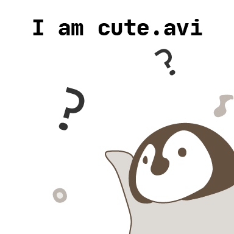
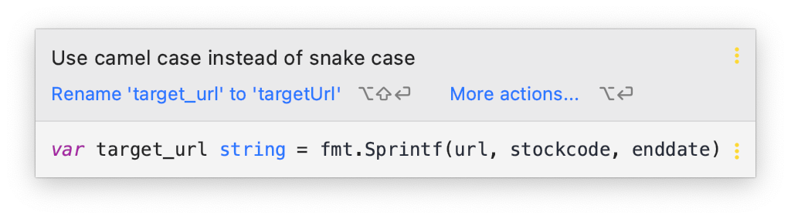

- 标签：后端、Golang

Go 的奇妙旅程：Go 的基础语法｜Go 主题月

Go 标记（Token）
Go 程序由多个标记组成。
这些标识符是关键字、标识符、常量、字符串或是符号。
如下 Go 程序语句就由 6 个标记组成：
fmt.Println("Hello, World!")
他们分别是：
fmt.Println(Hello, World!)
行分隔符以及换行
但如果语句不完整，例如如果 ( 没有对应的 ) 或者 [ 没有对应的 ]，则不会认定为是句子的末尾。譬如说：
fmt.Println( // 这里不是一只 🍊 的末尾
"Hello, World!") // 🍊 的末尾
fmt.Println("I'm from Guangzhou China 🇨🇳") // 🍊 的末尾
我们无须人为给语句以 ; 作结（不像 C++、C、Java、JavaScript 那样），因为这些分开语句的工作都将由 Go 编译器自动完成（就像是 Kotlin 那样，可省略也可麻烦～）。
如果你打算将多个语句写在同一行，那它们之间必须添加 ; 分隔符，人为分开，譬如说：
fmt.Println("Hello, World!"); fmt.Println("I'm from Guangzhou China 🇨🇳") // 🍊 的末尾
不过为了代码的可读性，以及整洁性，还是分开的好～（话说你是哪一派？一步到胃派还是？）
注释
编译器会忽略它们，但高效地使用注释能够在未来程序的重构、维护中帮到我们 —— 至少不会两眼瞎。它们以 /* 开头并以 */ 结束，或者用 // 为始，就像这样：
/* 霜羽好可爱 */
// 我不信！

Go 中注释的食用方法与 JavaScript、C++、Java 等语言一致（叭），那企鹅就能够放心地去食用啦～
标识符
Go 中的标识符专门用于标识变量、函数或任何其他用户定义项的名称。Go 标识符以字母（A 到 Z 或 a 到 z）或下划线 _ 开头，后跟零个或多个字母、下划线或数字（0 到 9）。
但是 Go 不允许在标识符内使用标点符号，例如 @、$ 和 ％。Go 是区分大小写的编程语言。因此，Person 和 person 是 Go 中两个不同的标识符。这是一些符合规范的标识符：
| 标识符 | 标识符 | 标识符 | 标识符 | 标识符 |
|---|---|---|---|---|
| formHash | username | pwd | available_state | tmp_1 |
| GitHubToken | _tmp | i | j | retVal |
| url | k | _formdata | postdata | retVal |
不过值得注意的是，GoLand 强迫（推介）我们使用驼峰式（Camel Case）变量名而不推介蛇形（Snake Case）：
GoLand 你坏坏！！！

命名方式
温习一下命名方式，基本有五（四）种：
- camelCase
- PascalCase
- snake_case
- kebab-case
- whatisthiscase
字符串的连接
在 Go 语言中我们使用 + 连接两个字符串：
package main
import "fmt"
func main() {
fmt.Println("Hoarfroster" + " is Handsome")
}
关键字
下面列举了 Go 代码中的 25 个关键字或保留字：
| 关键字 | 关键字 | 关键字 | 关键字 | 关键字 |
|---|---|---|---|---|
| break | default | func | interface | select |
| case | defer | go | map | struct |
| chan | else | goto | package | switch |
| const | fallthrough | if | range | type |
| continue | for | import | return | var |
除了以上介绍的这些关键字，Go 语言还有 36 个预定义标识符：
| 标识符 | 标识符 | 标识符 | 标识符 | 标识符 | 标识符 | 标识符 | 标识符 |
|---|---|---|---|---|---|---|---|
| append | bool | byte | cap | close | complex | complex64 | complex128 |
| copy | false | float32 | float64 | imag | int | int8 | int16 |
| int32 | int64 | iota | len | make | new | nil | panic |
| println | real | recover | string | true | uint | uint8 |
程序一般由关键字、常量、变量、运算符、类型和函数组成。
程序中可能会使用到这些分隔符：括号 ()，中括号 [] 和大括号 {}。
程序中可能会使用到这些标点符号：.、,、;、: 和 …。
Go 语言的空格
Go 语言中变量的声明必须使用空格隔开，如：
var age int
语句中适当使用空格能让程序更易阅读。如果木有空格，有些太拥挤了，就像是地狱西路一样：
fruit=apples+oranges;
在变量与运算符间加入空格，程序看起来更加美观，摇身变成运凳小轻轨：
fruit = apples + oranges;
格式化字符串
Go 语言中使用 fmt.Sprintf 格式化字符串并赋值给新串：
package main
import "fmt"
func main() {
// %d 表示整型数字，%s 表示字符串
var stockcode = 123
var enddate = "2020-12-31"
var url = "Code=%d&endDate=%s"
var targetUrl = fmt.Sprintf(url, stockcode, enddate)
fmt.Println(targetUrl)
}